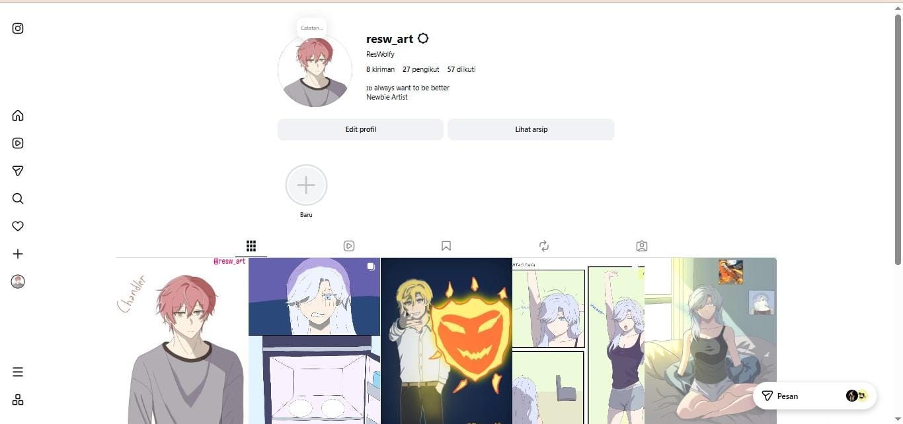
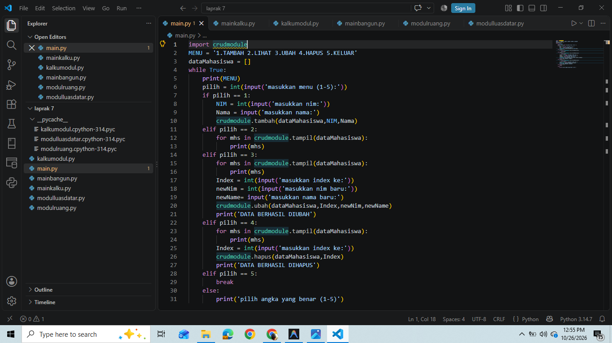
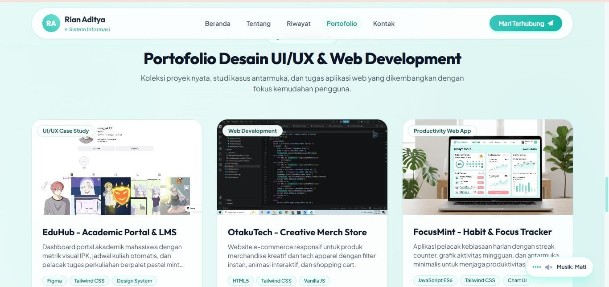

Rian Aditya
Mahasiswa Sistem Informasi | Antusias UI/UX & Web Dev
Fokus membangun produk digital yang tidak hanya berfungsi secara teknis dengan arsitektur sistem yang kokoh, tetapi juga menyenangkan, estetik, dan mudah digunakan oleh manusia. Senang mentransformasikan ide wireframe menjadi kode web interaktif yang super responsif.
UI/UX Mindset
Human-centered
Clean Coding
HTML & Tailwind
System Analysis
Logic & Workflow
Menyatukan Logika Sistem & Seni Desain Antarmuka
Mengenal latar belakang akademis, minat di dunia digital, dan kompetensi teknis yang terus diasah setiap hari.
Latar Belakang & Pendidikan
Saya adalah mahasiswa aktif program studi Sistem Informasi tingkat akhir yang berdedikasi tinggi terhadap pengembangan teknologi web dan desain antarmuka pengguna (UI/UX).
Di bangku kuliah, saya mempelajari bagaimana merancang proses bisnis dan arsitektur sistem informasi yang efisien. Namun, saya menyadari bahwa secanggih apapun sistem backend, kesuksesan produk sangat ditentukan oleh kemudahan dan kepuasan pengguna saat berinteraksi dengan antarmuka. Oleh karena itu, saya mengawinkan keilmuan analisis sistem dengan kreativitas UI/UX dan frontend coding.
Status Akademis
S1 Sistem Informasi
Indeks Prestasi (IPK)
3.85 / 4.00
Minat Utama
UI/UX & Frontend
UI/UX Prototyping
Riset persona, flow user, wireframing, dan interactive prototype dengan Figma.
Mobile-First Code
Implementasi web bersih, modular, dan responsif dari HP hingga layar lebar.
Keahlian & Skills
Teknologi, tools desain, dan keahlian yang aktif saya pelajari dan terapkan:
Target Belajar Saat Ini: React.js, Tailwind v4, & Micro-Interactions Animation.
Jejak Langkah & Perkembangan Karir
Kombinasi pengalaman organisasi kampus, magang praktis, dan pelatihan intensif untuk memperkuat keahlian teknis.
S1 Sistem Informasi
Universitas Negeri
Fokus pada Analisis & Desain Sistem Informasi, Rekayasa Perangkat Lunak, Basis Data, dan UI/UX Design. Menjaga indeks prestasi kumulatif (IPK) 3.85.
UI/UX Designer & Frontend Intern
Creative Studio Digital
Merancang wireframe dan visual prototype untuk 3 aplikasi klien, menguji usability dengan calon pengguna, dan mengonversikan desain Figma ke Tailwind CSS responsif.
Koordinator Divisi Media & Kreatif
Himpunan Mahasiswa Sistem Informasi
Memimpin tim kreatif dalam perancangan branding event, publikasi media sosial, serta pembaruan antarmuka web portal informasi mahasiswa himpunan.
Sertifikasi Responsive Web Design
Frontend Academy Online
Menyelesaikan 300+ jam materi dan proyek praktis seputar CSS Grid, Flexbox, Mobile-First architecture, dan standardisasi aksesibilitas website.
Portofolio Desain UI/UX & Web Development
Koleksi proyek nyata, studi kasus antarmuka, dan tugas aplikasi web yang dikembangkan dengan fokus kemudahan pengguna.

EduHub - Academic Portal & LMS
Dashboard portal akademik mahasiswa dengan metrik visual IPK, jadwal kuliah otomatis, dan pelacak tugas perkuliahan berpalet pastel mint yang ergonomis.

OtakuTech - Creative Merch Store
Website e-commerce responsif untuk produk merchandise kreatif dan tech apparel dengan filter instan, animasi interaktif, dan shopping cart.

FocusMint - Habit & Focus Tracker
Aplikasi pelacak kebiasaan harian dengan streak counter, grafik aktivitas mingguan, dan antarmuka minimalis untuk menjaga produktivitas mahasiswa.
Mari Memulai Diskusi & Kolaborasi
Punya tawaran proyek, peluang magang, atau sekadar ingin berdiskusi mengenai UI/UX & Web Dev? Kirim pesan Anda di bawah ini!
Email Resmi
rian.aditya.is@gmail.com
WhatsApp / Telepon
+62 812-3456-7890
Domisili
Jakarta & Bandung, Indonesia
Saya siap membalas pesan Anda dalam 1x24 jam untuk peluang magang, freelance web design, maupun kolaborasi proyek kampus.